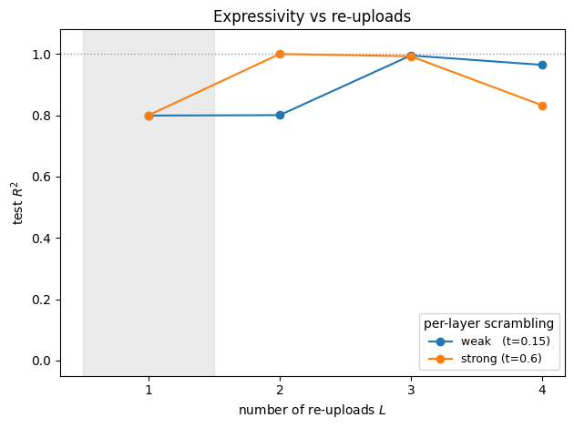

Nonlinear regression with a quantum extreme learning machine
A fixed quantum system turns a single number \(x\) into a bank of nonlinear features. Only a classical linear readout is trained. This notebook builds such a quantum extreme learning machine (QELM) from scratch with exact statevectors (NumPy and SciPy only, no quantum-computing library) and uses it to regress a multi-frequency target function.
Motivation: the extreme learning machine idea
A classical extreme learning machine (ELM) is a neural network with one hidden layer whose input-to-hidden weights are set randomly and never trained. The hidden layer applies a fixed nonlinear map \(\phi\) to the input, producing a high-dimensional feature vector, and only the hidden-to-output weights are fit, by linear least squares. The bet is that a rich enough random feature map already contains, in linear combination, the function one wants; learning then reduces to a single convex problem with no backpropagation and no local minima.
The quantum version replaces the random hidden layer by a fixed quantum process. A classical input \(x\) is encoded into a quantum state, that state is processed by a fixed, untrained unitary, and a set of observables is measured. The vector of expectation values is the feature vector \(\boldsymbol{f}(x)\). As in the classical ELM, only a linear readout \(\boldsymbol{w}\) is trained:
Two features distinguish the QELM from a quantum reservoir computer (QRC). The QELM is static: each input \(x\) is processed independently, with no memory of previous inputs. And its expressive power comes from the encoding and the fixed scrambling dynamics, not from any temporal recurrence.
from a handful of training samples, using a QELM whose reservoir is a fixed, nonintegrable spin chain.
Protocol for one input \(x\).
Start from \(|0\rangle^{\otimes N}\) on a small register (\(N=5\)).
Repeat \(L\) times: apply a fixed scrambling unitary \(\hat U = e^{-i\hat H t}\) with \(\hat H\) the mixed-field Ising Hamiltonian, then a data-encoding layer \(\hat S(x) = \prod_i e^{-i x \hat Z_i / 2}\). This interleaving is data re-uploading.
Apply one final scramble, so the encoded phases become measurable coherences.
Read a fixed bank of low-weight Pauli expectation values as \(\boldsymbol{f}(x)\).
Only the ridge-regression readout \(\boldsymbol{w}\) is trained. We report the held-out \(R^2\) and mean squared error, and we show that the number of re-uploads \(L\) controls which Fourier frequencies the reservoir can represent.
Code
import numpy as npimport matplotlib.pyplot as pltfrom scipy.linalg import expmnp.set_printoptions(precision=4, suppress=True)# Single-qubit Pauli matrices.I2 = np.eye(2, dtype=complex)X = np.array([[0, 1], [1, 0]], dtype=complex)Y = np.array([[0, -1j], [1j, 0]], dtype=complex)Z = np.array([[1, 0], [0, -1]], dtype=complex)def kron_op(single, site, N):"Embed a single-qubit operator at `site` into the N-qubit space." op = np.array([[1.0]], dtype=complex)for j inrange(N): op = np.kron(op, single if j == site else I2)return op
The reservoir: a fixed scrambling Hamiltonian
The reservoir is the nonintegrable mixed-field Ising chain
The transverse field \(h_x\) alone would leave the model Jordan-Wigner integrable; the longitudinal field \(h_z\) breaks integrability, so the dynamics genuinely scramble and mix low-weight operators into high-weight ones. This is what supplies a rich, nonlinear feature basis. The unitary \(\hat U = e^{-i\hat H t}\) is computed once and never trained.
Code
def mixed_field_ising(N, J, hx, hz):"Nonintegrable mixed-field Ising Hamiltonian on N qubits." H = np.zeros((2** N, 2** N), dtype=complex)for i inrange(N -1): H += J * (kron_op(Z, i, N) @ kron_op(Z, i +1, N))for i inrange(N): H += hx * kron_op(X, i, N) + hz * kron_op(Z, i, N)return HN =5# small register: exact statevectors, dim 2^5 = 32J, hx, hz =1.0, 0.9, 0.8# nonintegrable pointt =0.6# per-layer scrambling timeH = mixed_field_ising(N, J, hx, hz)U = expm(-1j* H * t) # fixed reservoir unitary, computed onceprint("Hilbert space dimension:", 2** N)print("U is unitary:", np.allclose(U @ U.conj().T, np.eye(2** N)))
Hilbert space dimension: 32
U is unitary: True
Encoding and the Fourier picture
The input is written in by the diagonal encoding layer \(\hat S(x) = \prod_i e^{-i x \hat Z_i / 2}\). Acting on a statevector it multiplies each computational-basis amplitude \(b\) by a phase \(e^{-i x g_b}\), where \(g_b = \tfrac12\sum_i (1 - 2\,b_i)\) is the total \(\hat Z/2\) eigenvalue of that basis state.
Every measured feature is therefore a finite Fourier series in \(x\). The accessible frequencies are the differences of the encoding generator’s eigenvalues, and with \(L\) re-uploads these differences add up: the reachable frequencies extend to \(L\cdot N\). This is the Schuld-Sweke-Meyer picture. With \(N=5\) a single upload reaches frequency \(5\), which cannot represent the \(\sin(7x)\) component of the target; two uploads reach frequency \(10\) and can. Re-uploads, not extra training, buy the expressivity.
Code
def encoding_phases(N):"Per-basis-state phase generator g_b for S(x) = prod_i exp(-i x Z_i / 2)." b = np.arange(1<< N) pop = np.array([bin(i).count("1") for i inrange(1<< N)])return (N -2* pop) /2.0# g_b: eigenvalue differences are integers 0..Ng = encoding_phases(N)print("encoding generator eigenvalues g_b:", np.unique(g))print("max reachable frequency at L uploads = L * N = L *", N)
encoding generator eigenvalues g_b: [-2.5 -1.5 -0.5 0.5 1.5 2.5]
max reachable frequency at L uploads = L * N = L * 5
Measurement: the readout observables
The feature vector collects low-weight Pauli expectation values: all single-site \(\{\hat X_i, \hat Y_i, \hat Z_i\}\), the nearest-neighbour \(\{\hat X_i\hat X_{i+1}, \hat Y_i\hat Y_{i+1}, \hat Z_i\hat Z_{i+1}\}\), and the all-pairs \(\{\hat Z_i \hat Z_j\}\). For a pure state \(\psi\) any Pauli string \(\hat P = i^p \hat X^{x}\hat Z^{z}\) has
Now assemble the single-shot map \(x \mapsto \boldsymbol{f}(x)\). Nothing here is trained: the reservoir unitary \(\hat U\), the encoding, and the readout are all fixed. The only nonlinearity the readout ever sees is manufactured by this quantum pipeline.
Code
def qelm_features(xs, N, U, g, COLS, W, L):"Feature matrix F (len(xs) x d): the fixed encode->scramble QELM at each x." F = np.zeros((len(xs), COLS.shape[0]))for n, x inenumerate(xs): psi = np.zeros(1<< N, dtype=complex) psi[0] =1.0for _ inrange(L): psi = U @ psi # fixed scrambling psi *= np.exp(-1j* x * g) # data-encoding layer S(x) psi = U @ psi # final scramble -> measurable coherences F[n] = np.real(np.conj(psi) * W * psi[COLS]).sum(axis=1)return Fdef target(x):return np.sin(3* x) +0.5* np.sin(7* x)
Visualising the feature bank
A single scalar \(x\) is turned into a family of nonlinear, multi-frequency curves. These are the columns of the feature matrix, plotted against \(x\). The linear readout will fit the target as a weighted sum of exactly these curves.
We standardise the features on the training split, append a bias term, and solve the ridge-regression normal equations. This is the only fit in the whole pipeline, a single convex linear-algebra step with no variational loop.
The pedagogical payoff. Sweep the number of re-uploads \(L\) at a weak and a strong per-layer scrambling time. With one upload the reachable frequencies stop at \(N=5\), so the readout can only fit the \(\sin(3x)\) part and \(R^2\) is capped near \(0.80\), exactly the variance fraction of that component. Adding a second upload lifts the frequency ceiling past \(7\) and the fit becomes essentially exact, provided the scrambling is strong enough; a weakly scrambling reservoir needs an extra upload to build up the same high-frequency amplitude. Pushing \(L\) higher eventually over-scrambles and the feature signal degrades.
Code
L_sweep = [1, 2, 3, 4]for tev, label in [(0.15, "weak "), (0.6, "strong")]: Ut = expm(-1j* H * tev) r2s = []for L in L_sweep: Ftr = qelm_features(x_train, N, Ut, g, COLS, W, L) Fte = qelm_features(x_test, N, Ut, g, COLS, W, L) wl, mul, sdl = ridge_fit(Ftr, y_train, lam) r2s.append(r2_score(y_test, ridge_predict(Fte, wl, mul, sdl))) plt.plot(L_sweep, r2s, "-o", label=f"{label} (t={tev})")print(f"{label} R^2(L=1..4) = {np.round(r2s, 3).tolist()}")plt.axhline(1.0, color="0.6", ls=":", lw=1)plt.axvspan(0.5, 1.5, color="0.85", alpha=0.5)plt.xlabel("number of re-uploads $L$"); plt.ylabel("test $R^2$")plt.xticks(L_sweep); plt.ylim(-0.05, 1.08)plt.legend(title="per-layer scrambling", fontsize=9)plt.title("Expressivity vs re-uploads"); plt.tight_layout(); plt.show()
weak R^2(L=1..4) = [0.799, 0.8, 0.995, 0.964]
strong R^2(L=1..4) = [0.8, 1.0, 0.993, 0.833]

Summary
A fixed encode-then-scramble quantum pipeline maps a scalar input \(x\) into a bank of nonlinear, multi-frequency features in a single shot. No temporal memory is involved: every input is processed independently.
Only a ridge-regression readout is trained, a single convex step. On the multi-frequency target the held-out fit is essentially exact (\(R^2 \approx 1\)).
Expressivity is set by the encoding spectrum and the number of re-uploads, not by training: with \(N\) qubits and \(L\) uploads the reachable Fourier frequencies extend to \(L\cdot N\). One upload cannot represent \(\sin(7x)\); two can. This is the data-reuploading mechanism, with scrambling supplying the cross-frequency amplitudes.
The scrambling strength is the second knob: stronger per-layer mixing reaches a given accuracy in fewer uploads, while too much mixing over-scrambles the features.